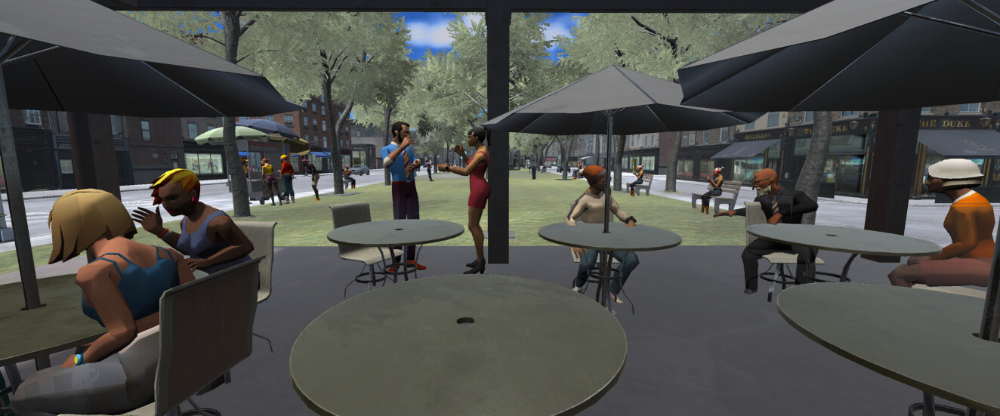
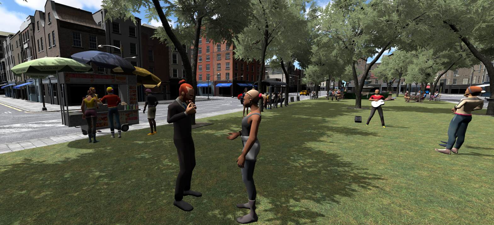
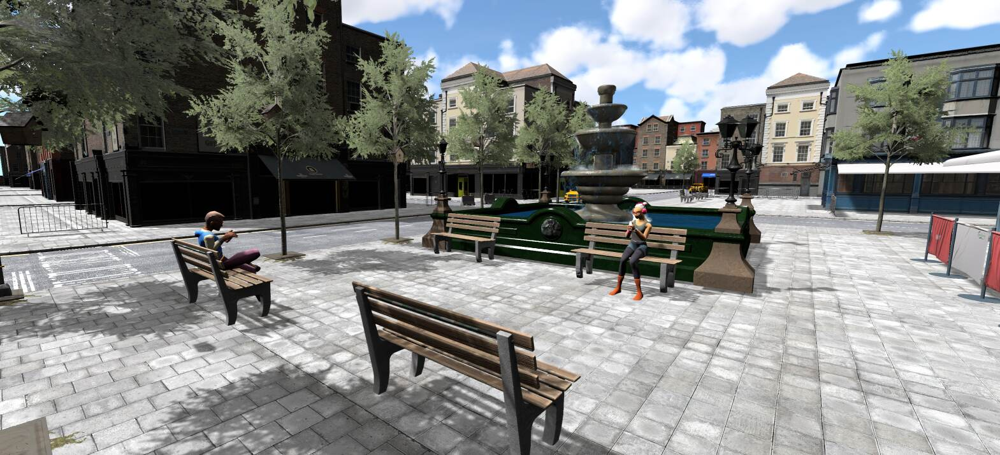
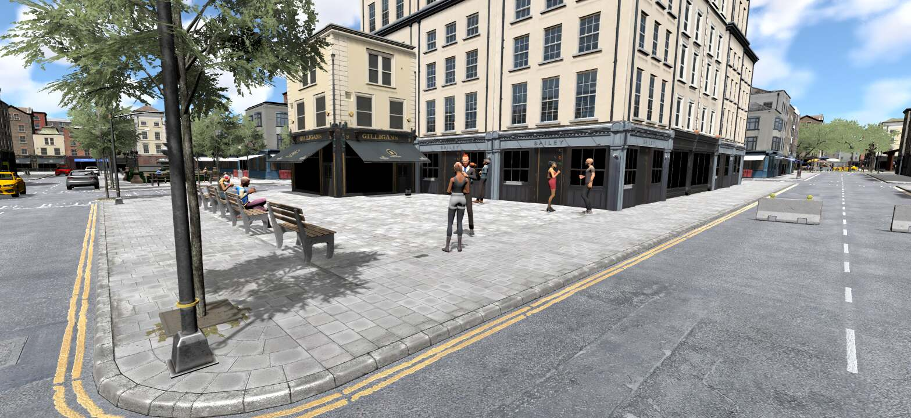

A Virtual Reality Soundscape Simulator

Project Overview
City Ditty is an interactive soundscape simulator designed to help professionals of the built environment and other non-specialists hear, explore, and compare possible urban soundscapes. It translates soundscape information into a contextual audiovisual experience in which users can manipulate individual elements, listen to the consequences, and consider sound alongside the visual and physical design of a space.
Its development was informed by a user-centred needs assessment targeting urban planners, designers, policymakers, and other city makers, followed by a series of usability and stakeholder studies. Early participants were able to learn about soundscapes and produce simple designs in less than an hour. City Ditty has since expanded across desktop and head-mounted virtual reality platforms and into several complementary forms of use.
- From awareness to practice: Help professionals recognize sound-related concerns, explore alternatives, and communicate possible interventions.
- Rapid exploration: Create and compare soundscape possibilities without requiring specialist sound training.
- Multiple forms of use: Support open design, guided learning, and controlled evaluation.
- Accessible interaction: Manipulate sound through familiar desktop controls or spatial interaction in virtual reality.
- Applied research: Use the same underlying platform to investigate interaction, professional communication, public-space design, and soundscape experience.
Interactive Soundscape Design
Soundscapes are spatial, temporal, and dynamic — always changing with their surrounding context. City Ditty’s Free Design mode allows users to construct and revise audiovisual soundscape scenarios while listening to the effects of their decisions in real time.
- Manipulate sound sources: Add, remove, position, and modify individual sources within a three-dimensional environment.
- Change the surrounding context: Explore variations in time, season, weather, human activity, and other environmental conditions.
- Hear immediate consequences: Listen as individual changes alter the overall soundscape.
- Compare alternatives: Move between different interventions or design possibilities within the same environment.
- Prototype early ideas: Explore promising directions before undertaking detailed acoustic analysis or implementation.
Related research:
Guided Soundscape Learning
Learning about soundscapes becomes more meaningful when people can act on what they hear. City Ditty’s interactive modules combine structured listening tasks with opportunities for experimentation, helping non-specialists develop sound-awareness through direct experience.
- Directed listening: Draw attention to sound sources, relationships, and contextual changes that might otherwise go unnoticed.
- Applied concepts: Explore ideas such as temporal variation, sound-source composition, pedestrianization, construction scheduling, natural sounds, and noise mitigation techniques.
- Immediate experimentation: Modify the environment and listen to how each intervention changes the resulting experience.
- Flexible guidance: Follow the suggested activities while remaining free to investigate other possibilities.
- Learning through design: Progress from recognizing and understanding soundscape elements to applying ideas and creating simple alternatives.
Related research:
Yanaky, R., & Guastavino, C. (2026, September 8-12). Translating Soundscapes into Practice Using Virtual Reality: City Makers’ Insights on Interactive Soundscape Simulation. Documenta of Forum Acusticum 2026. Forum Acusticum 2026, Sept. 8-12, Graz, Austria. Invited paper.

Evaluation Mode
City Ditty can also turn designed soundscapes into controlled conditions for comparative studies. Evaluation Mode allows researchers to present scenarios systematically and collect participant responses without developing a separate interactive system for every experiment.
- Reuse designed environments: Transform scenarios created through Free Design into experimental conditions.
- Configure studies from existing content: Assemble scenarios, run experimental sessions, and collect behaviour and response data without additional programming.
- Compare soundscape alternatives: Examine how changes in sound, spatial design, or environmental context affect experience.
- Consistent study delivery: Present conditions and activities in a predetermined or randomized order across participants.
- Custom content: Adding environments, objects, or other assets that are not already included in the City Ditty library currently requires developer support.
Related research:
Full paper: In preparation.
Human–Soundscape Interaction
Beyond its practical applications, City Ditty provides a platform for investigating human–soundscape interaction: how people perceive, manipulate, compare, and reason about soundscapes through interactive systems. This connects soundscape research with human–computer interaction, virtual reality, and interaction design.
- Action and listening: Study the cycle of making a change, hearing its consequences, reflecting, and revising.
- Spatial interaction: Examine how people navigate soundscapes and manipulate sound sources within three-dimensional environments.
- Interaction modalities: Compare desktop and head-mounted VR interfaces and the different forms of access and control they provide.
- User experience: Investigate usability, engagement, presence, and listening experience.
- Broader participation: Explore how interactive technologies can make soundscape design more accessible to people with different expertise and lived experience.
Related research:
Yanaky, R., Toffa, S., & Guastavino, C. (2026, Sept 8-12). Interacting with soundscapes in Virtual Reality: desktop vs. immersive VR. Documenta of Forum Acusticum 2026. Forum Acusticum 2026, Sept. 8-12, Graz, Austria. Invited paper.

Cross-Disciplinary Communication
Urban sound is understood and discussed differently across planning, design, policy, acoustics, and the communities affected by those decisions. An interactive simulation can provide a shared experiential reference through which participants hear, examine, and discuss the same proposed conditions.
- Make alternatives audible: Communicate proposed changes through experiences rather than relying only on descriptions, plans, or numerical measurements.
- Establish shared reference points: Give collaborators a common environment in which to identify concerns and discuss possibilities.
- Connect different forms of knowledge: Relate technical expertise to professional priorities, design intentions, and everyday experience.
- Clarify needs and decisions: Help non-specialists communicate questions and requirements more precisely to sound experts.
- Complement specialist expertise: Support earlier and more productive collaboration without replacing acoustical analysis or professional judgment.
Related research:
Yanaky, R., & Guastavino, C. (2026, September 8-12). Translating Soundscapes into Practice Using Virtual Reality: City Makers’ Insights on Interactive Soundscape Simulation. Documenta of Forum Acusticum 2026. Forum Acusticum 2026, Sept. 8-12, Graz, Austria. Invited paper.
(Re)Designing Public Spaces
The ChucaoLab at the University of Chile is using City Ditty to support multidisciplinary student design competitions focused on redesigning Parque O’Higgins in Santiago. The collaboration centers on a site-specific simulation developed largely by the ChucaoLab team, with technical guidance and targeted software adjustments supporting the integration of their work into City Ditty.
- Build a site-specific environment: The ChucaoLab team created a virtual representation of Parque O’Higgins and its surrounding context.
- Record the local soundscape: The team recorded and prepared sound sources from the park for use within the simulation.
- Create custom 3D assets: ChucaoLab developed the additional models needed to represent the site and support the redesign activities.
- Integrate the project content: Their environment, recordings, and 3D models were incorporated into City Ditty with integration guidance and targeted adjustments to the software.
- Explore redesign alternatives: Multidisciplinary student teams used the completed simulation during design competitions to develop and examine alternative proposals for the park.
Related research:
Kogan, P., Fuentes, L., Yanaky, R., Verdugo, D., Saavedra, I., Monsalve, J., Hidalgo, P., Vega, B., Bild, E., & Guastavino, C. (2026, Sept 8-12). From Soundwalks to Auralisation: A Participatory Urban Soundscape Design Workflow Using City Ditty. Documenta of Forum Acusticum 2026. Forum Acusticum 2026, Sept. 8-12, Graz, Austria.

Work with City Ditty
City Ditty continues to develop through municipal, public-space, and academic collaborations. Projects are particularly well suited to soundscape learning, early design exploration, comparative evaluation, and research into how people experience urban environments.
- Cities and public-space projects: Explore existing sound-related concerns or prototype possible interventions.
- Researchers: Develop comparative soundscape experiments using Free Design and Evaluation Mode.
- Educational applications: Use guided activities to introduce soundscape concepts through active listening and experimentation.
- Research and development partnerships: Investigate new environments, interaction methods, or applications for the platform.
Interested in using City Ditty for a city project or research study?
Please contact: Richard Yanaky or Catherine Guastavino
Demos and Documentation
Learn more about City Ditty through recorded demonstrations and presentations, or consult practical guidance for using the software and analyzing the data it collects.
Other selected works
Yanaky, R., & Guastavino, C. (2024, November). Using virtual reality to integrate sound considerations in city-making. Congrès du Réseau AIRS 2024, Montreal, QC, Canada. Best presentation award.
Yanaky, R., & Guastavino, C. (2023, March). City Ditty – First evaluations of a new virtual reality soundscape sketchpad [Poster presentation]. 5th CIRMMT/OIRCM/BRAMS Student Symposium, Montreal, QC, Canada. Best poster award.
Yanaky, R. (2022, March). Addressing transdisciplinary challenges through technology: Immersive soundscape planning tools. Paper presented at the 14th annual EBSI-SIS Student Symposium in Information Science, Montreal, QC, Canada. Best presentation award.